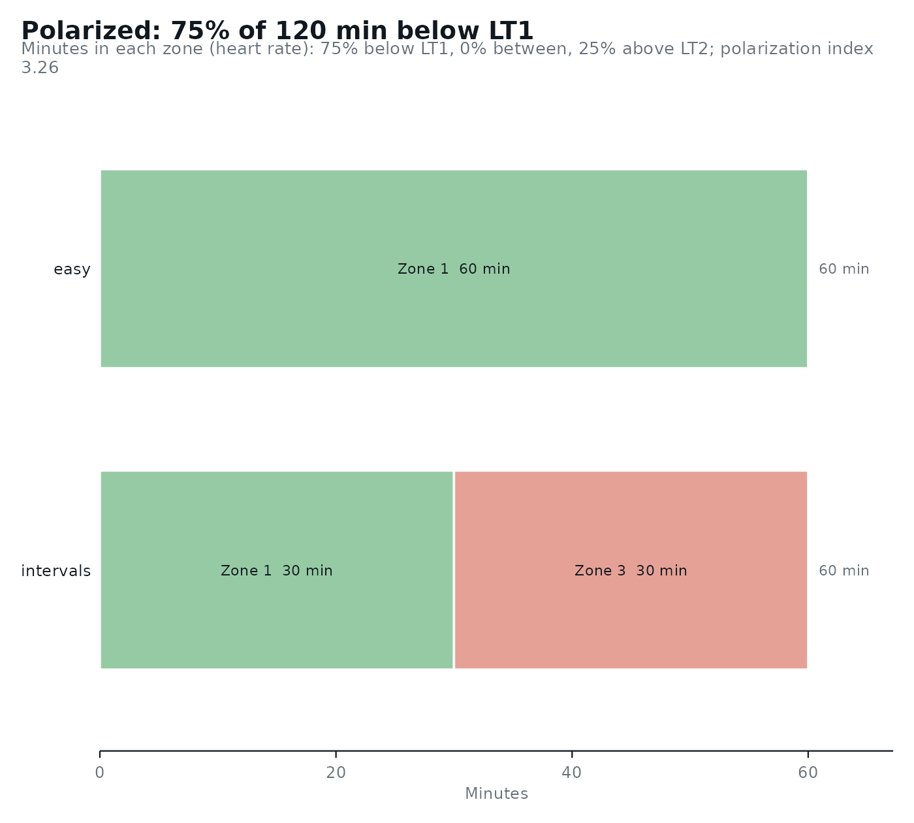

Sorts the samples of training sessions (heart rate, or power or speed) into the zones of lactate_zones(), and
returns the time in each zone and the training intensity distribution with its polarization index. It prints a
short summary and can be plotted with autoplot().
Arguments
- data
A data frame with one row per sample, or a numeric vector of samples.
- zones
The result of
lactate_zones(), with three or five zones.- column
The column of
datawith the samples. Defaults to the name ofmeasure.- measure
What the samples are:
"heart_rate"(bpm; uses the heart rate at the zone boundaries) or"intensity"(power or speed in the unit of the test).- interval
The time between two samples, in seconds. Defaults to
1.- .by
Names of columns that group the samples (e.g.
"session"or"week"), kept in the order they appear.- object
The result of
training_load().- ...
Not used.
Value
a lactate_load tibble with one row per group: minutes, the minutes in each zone (zone_1, ...), the
percentage of time in each zone (zone_1_percent, ...), with five zones the percentage in each domain
(moderate_percent, heavy_percent, severe_percent), polarization_index, and distribution.
Details
Time in zone: every sample counts for
intervalseconds in the zone of its value. Missing samples are left out. Heart rate lags behind intensity in short intervals, so heart-rate time in zone under-counts the highest zones in interval sessions; power or speed samples avoid that (Seiler, 2010).Intensity distribution across the three domains (moderate below LT1, heavy from LT1 to LT2, severe above LT2; with five zones, zones 1-2 and 4-5 are added up). The polarization index is
log10((moderate / heavy) * severe * 100), with each domain as a fraction of the total time; when the heavy domain is empty it is set to 0.01 and 0.01 is taken from the severe domain; it is 0 when the severe domain is empty, and not computed (NA) when the severe domain exceeds the moderate one. A distribution is"polarized"when the index is above 2.00 and moderate > severe > heavy (Treff et al., 2019). Otherwise it is labeled"pyramidal"(moderate > heavy > severe),"threshold"(heavy largest),"high intensity"(severe largest), or"other". Treff et al. (2019) note that a threshold distribution can also be pyramidal.
The distribution describes a training period, so give it the samples of all the sessions of that period (e.g.
.by = "week").
References
Seiler S. What is best practice for training intensity and duration distribution in endurance athletes? International Journal of Sports Physiology and Performance. 2010;5(3):276-291.
Treff G, Winkert K, Sareban M, Steinacker JM, Sperlich B. The polarization-index: a simple calculation to distinguish polarized from non-polarized training intensity distributions. Frontiers in Physiology. 2019;10:707.
Examples
results <- lactate_threshold(demo_data, intensity, lactate, heart_rate, plot = FALSE)
zones <- lactate_zones(results, lt1 = "Log-log", lt2 = "ModDmax")
## two sessions of heart rate sampled every 5 s
sessions <- data.frame(
session = rep(c("easy", "intervals"), each = 720),
heart_rate = c(rep(140, 720), rep(c(150, 185), times = 360))
)
load <- training_load(sessions, zones, interval = 5, .by = "session")
load
#> # Training load: 2 groups, 2.0 h in 3 zones (heart rate)
#> # Distribution: polarized: 75% moderate, 0% heavy, 25% severe (polarization
#> # index 3.26)
#> session minutes zone_1 zone_2 zone_3 zone_1_percent zone_2_percent
#> <chr> <dbl> <dbl> <dbl> <dbl> <dbl> <dbl>
#> 1 easy 60 60 0 0 100 0
#> 2 intervals 60 30 0 30 50 0
#> # ℹ 3 more variables: zone_3_percent <dbl>, polarization_index <dbl>,
#> # distribution <chr>
autoplot(load)
